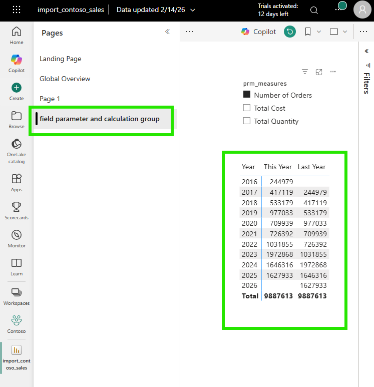
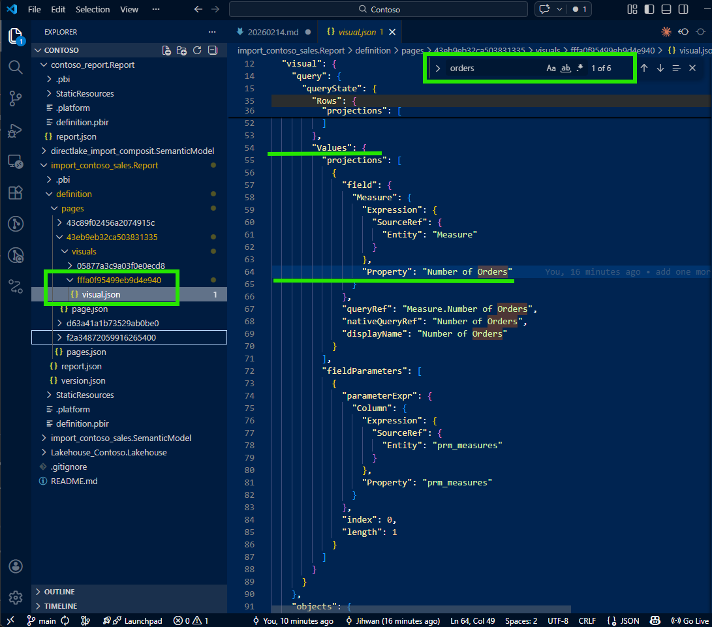
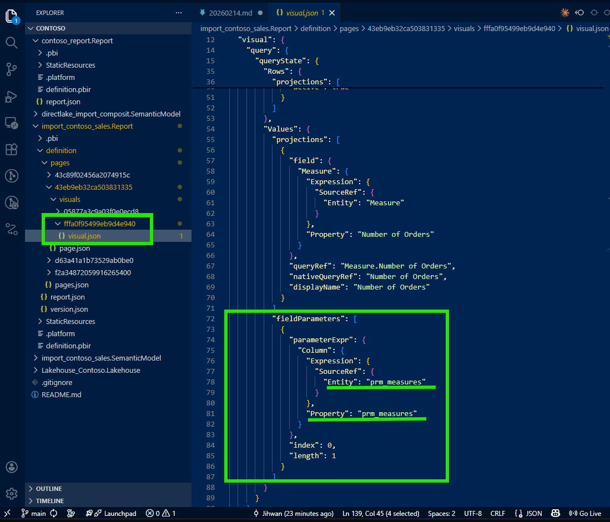
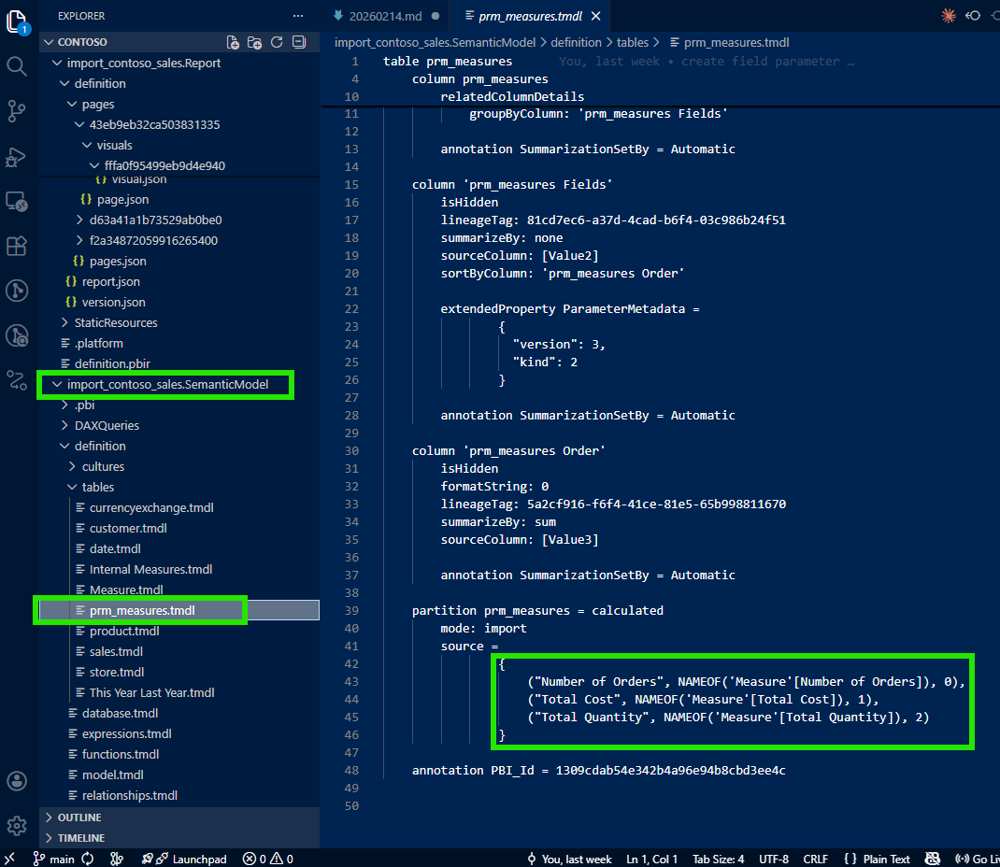
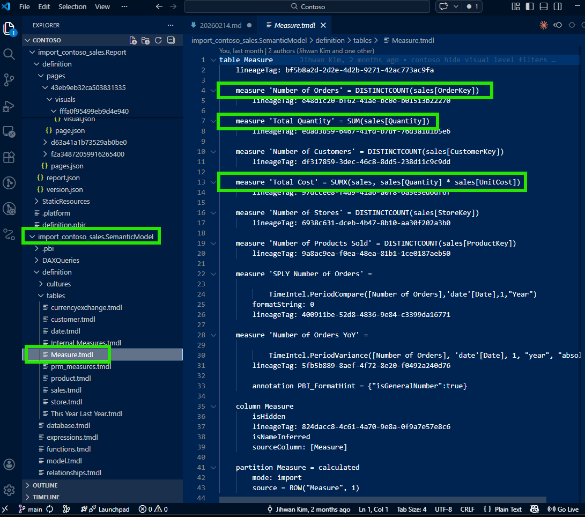
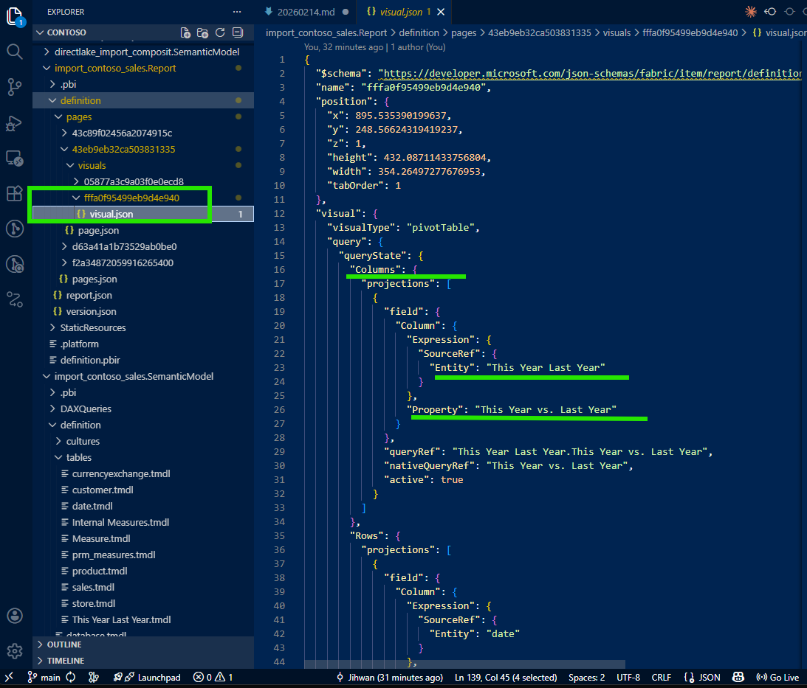
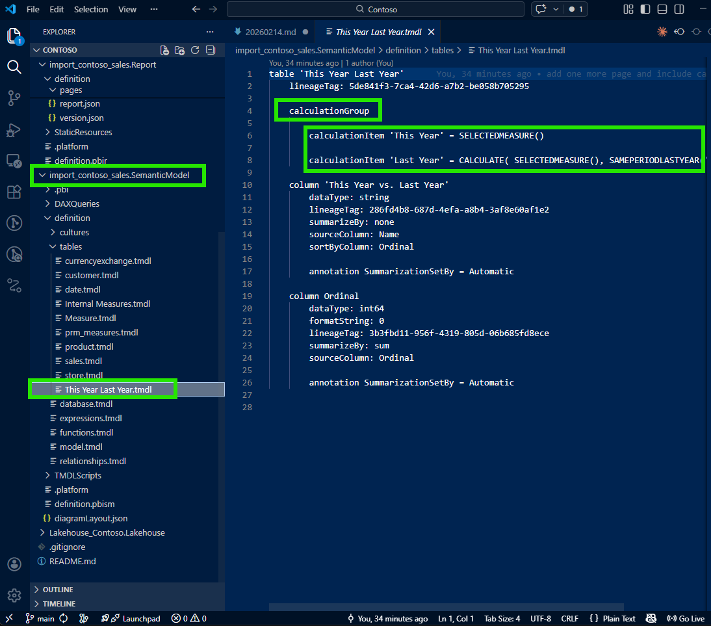
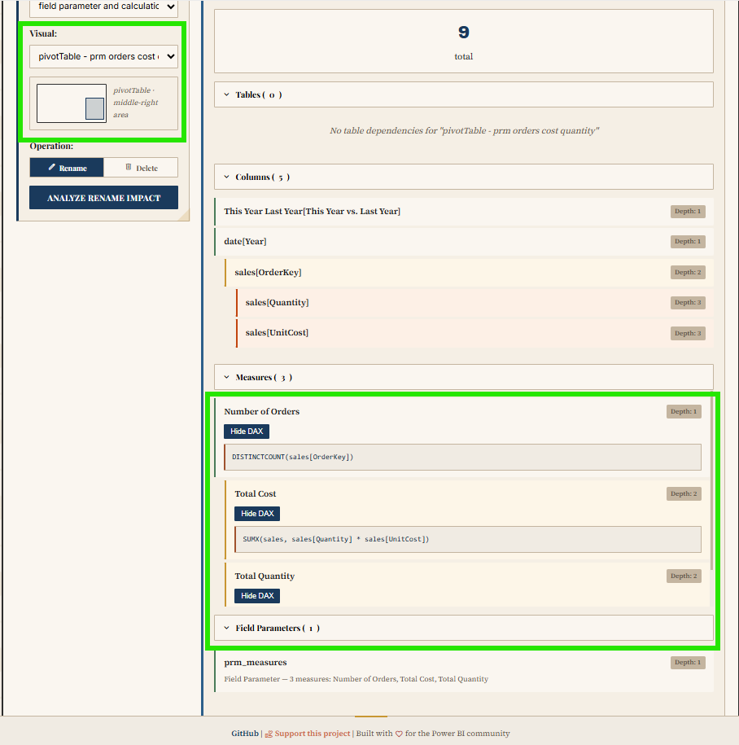

In this writing, I want to share how a simple question from users and a product owner led me down a path of discovery — one that changed the way I think about answering questions in Power BI. My plan was simple: find a way to explain what measures are shown in a visual and how they are calculated, without the slow roundtrip of opening Power BI Desktop. Instead, I discovered something deeper about how PBIR visual JSON handles measures, how field parameters hold the key to tracing them, and how this entire workflow can be automated.
1. The Question That Started It All
It started with a straightforward request. Users and the product owner were looking at a report in the Power BI Service and asked: "The measures on this visual — Number of Orders, Total Cost, Total Quantity — how are they calculated?"

A fair question. The typical response would be to open Power BI Desktop, wait for the file to load, navigate to the right page, click the visual, and inspect each measure. But I wanted to answer differently. I wanted to answer like a developer — directly from VS Code, from the PBIR source files in the Git repository. No Desktop needed. No loading time. Just code.
2. The First Surprise: Where Are the Other Measures?
I opened the visual's JSON file in VS Code. The PBIR format stores each visual as a separate JSON file, which makes it easy to locate and inspect. I expected to see all three measures listed there — Number of Orders, Total Cost, and Total Quantity. But when I opened the file, I found only one: the default selection, Number of Orders.

Total Cost and Total Quantity were nowhere to be found. This was the moment that made me pause. Where did the other measures go? I checked the file again, scrolled through it, searched for the measure names — nothing. It felt like the visual was only configured for one measure, but I knew from the Power BI Service that it was displaying three.
This is when I learned something important about how PBIR writes configuration: for efficiency, non-default or non-selected values are simply omitted from the JSON. If the visual has a default measure selection and other measures are available through a dynamic mechanism, the JSON only describes the default. It doesn't write what it doesn't need to write. This default-omission pattern keeps the files clean, minimal, and diff-friendly — but it also means that reading the visual JSON alone doesn't tell you the full story.
3. The Key: fieldParameters Property
I was about to give up and open Desktop when I noticed something in the visual JSON that caught my attention: a fieldParameters property.

This was the breadcrumb I needed. Field parameters are a Power BI feature that allows report authors to let users dynamically switch which measures or columns appear in a visual. As Marco Russo and Alberto Ferrari explain in their SQLBI article, field parameters use a calculated table tagged as a field parameter, where a slicer places a filter on the table and Power BI detects the selected value to change the query. According to the Microsoft documentation on field parameters, this feature enables report readers to dynamically change the measures or dimensions analyzed in a visual.
The visual wasn't hardcoded with three measures. It was configured with a field parameter that contained those three measures. The visual JSON only wrote the default selection, but the fieldParameters property pointed to the field parameter definition in the semantic model. That was my next stop.
4. Tracing from Visual JSON to Semantic Model TMDL
I followed the reference from the visual JSON's fieldParameters property into the semantic model folder. There, I found the field parameter definition in a TMDL file — a clean, human-readable definition of the calculated table that powers the field parameter.

And there they were: all three measures — Number of Orders, Total Cost, and Total Quantity — listed as rows in the field parameter's calculated table. The TMDL file made it clear which measures comprised this field parameter and in what order they would appear.
Now I could trace from the field parameter to each individual measure to see the DAX formula:

This was the aha moment. Without opening Power BI Desktop, I had the complete picture: visual → field parameter → individual measure DAX. The full traceability chain, all in VS Code, all from source files in the Git repository. I could now answer the stakeholder's question with precision: "Here's each measure, here's the DAX, here's how they connect to the visual through the field parameter."
5. Bonus: Tracing Calculation Groups Too
While investigating the visual, I noticed that one of the columns in the visualization was not a regular column — it was filled by a calculation group.

I applied the same tracing approach: follow the reference from the visual JSON into the semantic model folder, and find the calculation group definition in TMDL.

The same pattern worked beautifully. From the visual JSON, I traced to the calculation group's TMDL file and could see every calculation item defined there. As SQLBI explains in their article on combining field parameters and calculation groups, these two features work together to provide a highly customizable user experience. Seeing them both expressed as traceable source files made me appreciate the full power of the PBIR and TMDL formats working together.
6. A Note on Learning with AI
I want to be transparent about one part of this journey: I didn't figure all of this out alone. I was working with Claude (AI) as I explored the PBIR files. When I first asked about the missing measures in the visual JSON, Claude didn't immediately know why Total Cost and Total Quantity were absent. It suggested checking various properties, but the key insight — that non-default measures are omitted because of the default-omission pattern, and that fieldParameters is the breadcrumb to follow — came from my own domain knowledge of Power BI.
I guided the investigation: "Don't just look at the measures described in the visual JSON. Check if there's a fieldParameters property. If there is, trace it to the semantic model to find all the measures." Once I provided that direction, we were able to work together systematically to build the full tracing workflow.
Was my guidance actually helpful, or was this an illusion? Having reflected on it honestly: it was genuinely helpful. PBIR is a relatively new format, and the specific behavior of how field parameter visuals serialize to JSON isn't widely documented. The default-omission pattern is a design choice that makes perfect sense from an engineering perspective, but it's not something an AI model would infer without either encountering it in training data or having a human with domain experience point it out. My contribution was real — this was collaborative discovery where Power BI domain expertise met AI capability, and together we arrived at a workflow that neither of us would have built as quickly alone.
7. From Discovery to Open Source: PBIP Impact Analyzer
This experience — tracing from visual to field parameter to measure to DAX — made me realize that this kind of dependency analysis shouldn't require manual file-by-file investigation every time. What if there was a tool that could do this automatically, at scale, for any PBIP project?
That question led me to build the PBIP Impact Analyzer.

The app analyzes an entire PBIP folder and maps the dependencies across the project. It identifies every measure, column, and visual affected by potential changes. It reveals both upstream dependencies (what an object needs) and downstream dependents (what uses it), with depth indicators and DAX formula viewing. Dependencies are color-coded — tables in purple, columns in blue, measures in green, visuals in orange — and visuals are grouped by report page for easy navigation.
The tool also supports safe refactoring: side-by-side diffs before applying changes, name validation against reserved DAX keywords, and automatic backups with rollback functionality. Built-in safety checks detect circular dependencies, orphaned references, and performance concerns for large models.
It's browser-based, requires no installation or sign-up, and is MIT licensed. You can try it at jonathanjihwankim.github.io/pbip-impact-analyzer and the source code is on GitHub.
8. The DevOps Perspective
From a DevOps standpoint, this discovery is foundational. The ability to trace from a visual all the way to its underlying DAX — without opening Power BI Desktop — unlocks several workflows that were previously impossible or impractical.
Git-based Q&A workflow: When stakeholders ask "how is this measure calculated?", the answer lives in the repository. Open VS Code, navigate the PBIR and TMDL files, trace the dependency chain. No Desktop, no loading, no waiting. This is answering like a developer, and Power BI Projects (PBIP) make this possible by design.
PR review scenarios: When a teammate submits a pull request that modifies a measure's DAX, reviewers can now trace which visuals are affected. Does this measure feed into a field parameter? Which visuals use that field parameter? Is there a calculation group involved? These questions are now answerable through the source files alone, making code reviews for Power BI reports genuinely meaningful.
CI/CD validation: Automated checks can verify that every field parameter referenced in a visual JSON actually exists in the semantic model. They can detect orphaned references, validate that calculation group items are properly defined, and flag measures that have changed without corresponding visual review. Microsoft has announced that PBIR will become the default format, which means these validation pipelines will become the standard, not the exception.
The PBIP Impact Analyzer as automation: The app I built directly serves this DevOps pipeline. Instead of manually tracing dependencies, teams can use the Impact Analyzer to get an instant, comprehensive view of what changes will affect — before those changes reach production.
Reflection
This experience left me with a new mental model: answering questions about a Power BI report is a code navigation problem, not a Desktop clicking problem. The PBIR format turned report visuals into traceable source files. The TMDL format turned the semantic model into readable, diffable definitions. Together, they create a complete dependency chain from visual to DAX that lives in Git and can be navigated in any code editor.
The journey from "where are the other measures?" to building an open-source impact analyzer was unexpected, but it reinforced something I keep discovering: the more you treat Power BI artifacts as code, the more powerful your workflows become.
I hope this helps having fun in exploring PBIR visual JSON, field parameters, and TMDL — and embracing this new era of answering stakeholder questions like a developer!